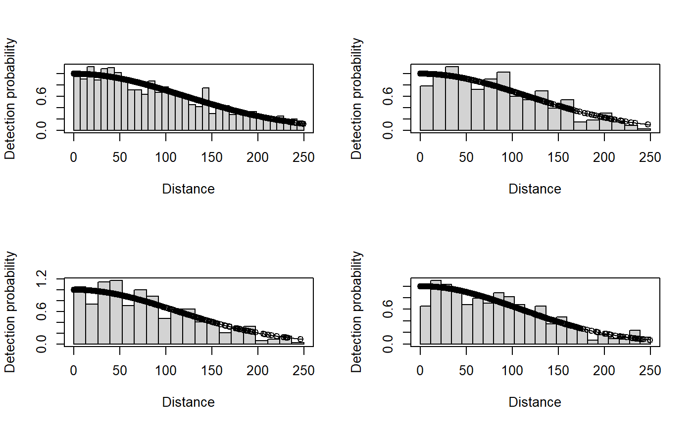

Distance Sampling
Lindesay Scott-Hayward
2023-08-29
Source:vignettes/web/DistanceSampling.Rmd
DistanceSampling.Rmd(Very) Brief Introduction to Distance Sampling using the
mrds library
- Load data and fit detection function (Distance Sampling)
This first step uses the mrds R package to
fit a detection function model. More information on using this package
can be found in its help files and also the Distance Sampling web pages
Here we fit a simple half normal detection function with no covariates and one with season as a covariate that may affect detectability of the animals.
# we will use the dataset with a known re-distribution of animals
data(dis.data.re, package = "MRSea")
dis.data<-dis.data.reFor the MRSea functions that we will use to generate the
adjusted counts per segment it is best that the data for analysis are
already segmented and including all the zero segments. Each row is
either a zero segment (with object and distance set to NA)
or a detection with a segment label (there may be more than one
detection per segment). The columns in our data are as follows:
-
transect.idIdentifier for the individual visits to the transects -
transect.labelLabels for transects -
seasonNumerical indicator for the four different seasons -
impactNumerical indicator for before (0) and after (1) impact -
segment.idIdentifier for individual visits to the segment -segment.labelLabel for segments -
lengthLength of segment in km -
x.posspatial location in the horizontal axis in UTMs -
y.posspatial location in the vertical axis in UTMs -
depthDepth in m -
objectId for detected object -
distancePerpendicular distance from the line
Additional observation level covariates may be present such as glare, sea state or observer
head(dis.data)
#> transect.id transect.label season impact segment.id segment.label length
#> 1 1 1 1 0 1 1-1 0.306
#> 2 1 1 1 0 2 1-2 0.500
#> 3 1 1 1 0 3 1-3 0.500
#> 4 1 1 1 0 4 1-4 0.500
#> 5 1 1 1 0 5 1-5 0.500
#> 6 1 1 1 0 6 1-6 0.500
#> x.pos y.pos depth object distance
#> 1 656.25 6043.75 -27.359 NA NA
#> 2 656.25 6044.25 -27.561 NA NA
#> 3 656.25 6044.75 -28.608 NA NA
#> 4 656.25 6045.25 -27.999 NA NA
#> 5 656.25 6045.75 -27.519 NA NA
#> 6 656.25 6046.25 -27.223 NA NAThe detection data has information in the object and distance columns relating to the sightings.
library(dplyr)
filter(dis.data, !is.na(distance)) %>% head
#> transect.id transect.label season impact segment.id segment.label length
#> 1 1 1 1 0 24 1-24 0.5
#> 2 1 1 1 0 25 1-25 0.5
#> 3 3 3 1 0 55 3-3 0.5
#> 4 3 3 1 0 72 3-20 0.5
#> 5 3 3 1 0 75 3-23 0.5
#> 6 3 3 1 0 75 3-23 0.5
#> x.pos y.pos depth object distance
#> 1 656.25 6055.25 -5.245 1 119.62272
#> 2 656.25 6055.75 -4.069 2 49.11847
#> 3 659.75 6041.75 -27.232 3 186.47936
#> 4 659.75 6050.25 -8.381 4 172.99776
#> 5 659.75 6051.75 -7.756 5 61.88337
#> 6 659.75 6051.75 -7.756 6 139.96327Simple detection function model with no covariates
result <- ddf(dsmodel=~mcds(key="hn", formula=~1),
data = dis.data, method="ds",
meta.data=list(width=250))
summary(result)
#>
#> Summary for ds object
#> Number of observations : 2373
#> Distance range : 0 - 250
#> AIC : 25446.68
#>
#> Detection function:
#> Half-normal key function
#>
#> Detection function parameters
#> Scale coefficient(s):
#> estimate se
#> (Intercept) 4.754715 0.02068035
#>
#> Estimate SE CV
#> Average p 0.5639473 0.009624525 0.01706636
#> N in covered region 4207.8400478 91.709328911 0.02179487Detection function model with one covariate, season.
result.season <- ddf(dsmodel=~mcds(key="hn", formula=~season),
data = dis.data, method="ds",
meta.data=list(width=250))
summary(result.season)
#>
#> Summary for ds object
#> Number of observations : 2373
#> Distance range : 0 - 250
#> AIC : 25443.56
#>
#> Detection function:
#> Half-normal key function
#>
#> Detection function parameters
#> Scale coefficient(s):
#> estimate se
#> (Intercept) 4.83166479 0.04092153
#> season -0.03701706 0.01610680
#>
#> Estimate SE CV
#> Average p 0.5632936 0.009633876 0.01710276
#> N in covered region 4212.7235384 91.994822304 0.02183737- Visualising the detection functions by season
par(mfrow=c(2,2))
plot(result.season, subset = season==1)
plot(result.season, subset = season==2)
plot(result.season, subset = season==3)
plot(result.season, subset = season==4)
- The BIC output shows that the simple no covariate detection function model is preferred.
- Adjust sightings for detectability
First the adjusted counts for each detection are estimated using the
create.NHAT function from the MRSea package.
The adjustment is the number of observed individuals divided by their
probability of detection. Additionally, the area (in km)
column is also created using the segment length and truncation
distance.
library(MRSea)
dis.data <- create.NHAT(dis.data,result)Then the create.count.data function is used to collapse
the data down into one row per segment. The estimated counts are summed
within each segment and the distance related variables removed
(distance, size, object).
If availability information is present, then these adjustments may also be made here.
count.data <- create.count.data(dis.data)
#> [1] "transect.id"
#> [1] "transect.label"
#> [1] "season"
#> [1] "impact"
#> [1] "segment.id"
#> [1] "segment.label"
#> [1] "length"
#> [1] "x.pos"
#> [1] "y.pos"
#> [1] "depth"
#> [1] "area"These count data are now ready for analysis using the main
MRSea functions. Specifically, spatially adaptive smoothing
in one and two dimensions.